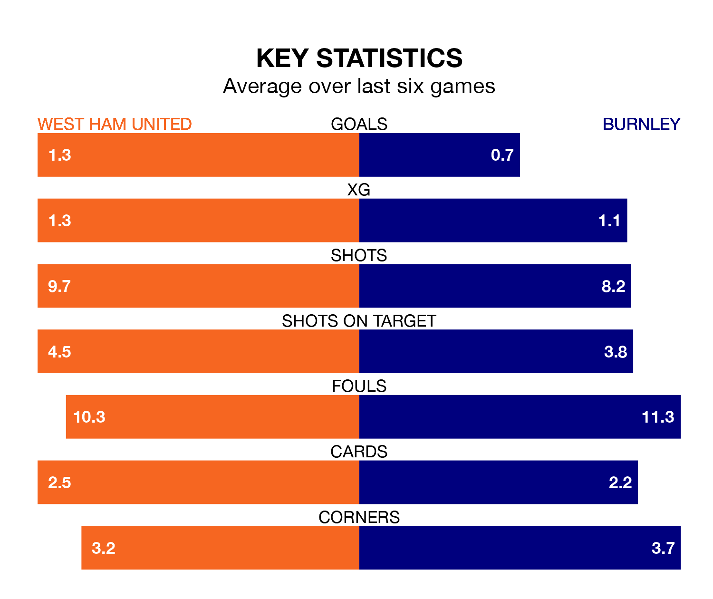

Burnley come to the London Stadium to play West Ham United on early Sunday in terrible form, having collected just one point from their last six games.
The visitors have drawn just one of their last six fixtures, while the Hammers have two wins and a draw.
Burnley are 19th in the table after 27 games, of which they have won three and drawn four, earning 13 points.
West Ham are 12 places ahead of the Clarets in seventh, with 12 wins and six draws putting them on 42 points.
In the last 10 years, West Ham and Burnley have played each other on 15 occasions. West Ham won eight of them, Burnley four, and they drew three times.
On average, the Hammers scored 1.2 goals and the Clarets 1.1 in those matches.
Their last meeting was on November 25, when West Ham won 2-1 away.
With 25 goals in 27 games so far this season, the away team are the league's second-lowest scorers with 0.9 goals per game. And they are conceding more than average, letting in 60 goals at a rate of 2.2 per game.
United, meanwhile, are average scorers, with 1.6 goals per game. They have conceded 1.7 goals per game.
In Jarrod Bowen, the Hammers have one of the league's most on-form strikers so far this season. He has notched 14 goals in 26 appearances, to sit fourth in the scoring charts.
Burnley's top scorers, with four goals each, are Lyle Foster and Zeki Amdouni.
West Ham's last match was on March 2, a 3-1 win against Everton, with Edson Álvarez, Kurt Zouma and Tomáš Souček getting the goals for the Hammers.
Burnley lost 2-0 against AFC Bournemouth last time out, on March 3.
Sunday's match will be refereed by Darren England, who has taken charge of six Premier League games so far this season, issuing no red cards and booking 32 players. He has awarded one penalty.
The last Burnley game England refereed was the 5-2 loss at home against Tottenham Hotspur on September 2. He is yet to oversee a match featuring West Ham this season.
Updated: 09:34 (UTC), 08/03/24